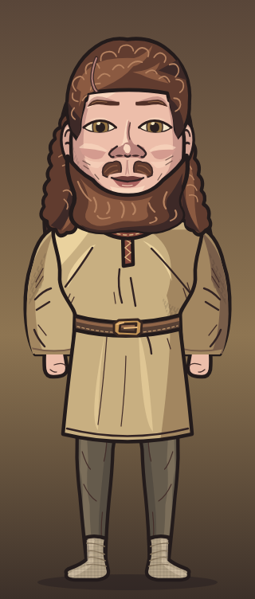
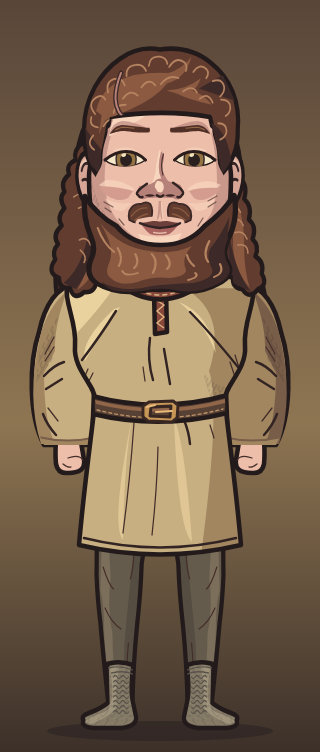

<!doctype html><html lang="ru"><meta charset="utf-8"><meta name="viewport" content="width=device-width,initial-scale=1"><title>Носки и онучи · материал</title><style>body{font:16px system-ui;background:#25201b;color:#eee2cd;margin:0 auto;max-width:1280px;padding:1rem}
    a{color:#f4ca91}h1,h2{font:700 1.7rem Georgia,serif}nav ul{columns:3}.grid{display:grid;gap:1rem;
    grid-template-columns:repeat(auto-fit,minmax(230px,1fr))}article{min-width:0;border:1px solid #655343;
    background:#312821;padding:.6rem;border-radius:5px}a img{vertical-align:middle}img{max-width:100%;height:auto}
    .character{display:block;max-height:460px;width:auto;margin:auto}.card{width:32px;height:32px}
    .detail{display:block;width:100%;margin:.35rem 0}.compare{display:flex;align-items:flex-start;gap:.5rem}
    .compare a{flex:1;min-width:0}small{color:#dccab0}code{overflow-wrap:anywhere}@media(max-width:730px){nav ul{columns:1}}</style><main><nav><a href="index.html">Все разделы</a></nav><h1>Носки и онучи · материал</h1><div class="grid"><article id="material__foot_lining_material__footcloth__linen"><h3>Лён</h3><code>linen</code><a href="images/3d0bf46ff4ec02bd1699fd2dc9f0a0074fb255b36c9e1b20f450b9f4e9979bb1.png"></a><p><a href="images/84051f02b0a48679a6d4ba307f2625231310681f0f77303e6b09d2346c092f2c.png"></a> <small>32 × 32</small></p><details><summary>До и после</summary><div class="compare"><span>До<a href="images/7d7ad6317866df255985ec4edcec501ab19664ce690bc409313be80749fe0c50.png"></a></span><span>После<a href="images/3d0bf46ff4ec02bd1699fd2dc9f0a0074fb255b36c9e1b20f450b9f4e9979bb1.png"></a></span></div></details></article>
<article id="material__foot_lining_material__footcloth__hemp"><h3>Конопляное полотно</h3><code>hemp</code><a href="images/825c1e82a2575ed6d9170cd89d335aadaaa75dd39d578a0ed73b2fbcfebb10b7.png"></a><p><a href="images/84051f02b0a48679a6d4ba307f2625231310681f0f77303e6b09d2346c092f2c.png"></a> <small>32 × 32</small></p><details><summary>До и после</summary><div class="compare"><span>До<a href="images/420760f0ad6455c53f3275274ab720b0bbb9fb87bda1732fbc6ec54393203a7b.png"></a></span><span>После<a href="images/825c1e82a2575ed6d9170cd89d335aadaaa75dd39d578a0ed73b2fbcfebb10b7.png"></a></span></div></details></article>
<article id="material__foot_lining_material__needlebound_sock__wool"><h3>Шерсть</h3><code>wool</code><a href="images/09aa231963e73dbaf6063c2609c953647790838feba731ab69302a5a76ed5e73.png"></a><p><a href="images/84051f02b0a48679a6d4ba307f2625231310681f0f77303e6b09d2346c092f2c.png"></a> <small>32 × 32</small></p><details><summary>До и после</summary><div class="compare"><span>До<a href="images/6023bd3757be2170dcdc4c753a3e6ad73fd2807e6d7a2dd74eb16117d84c4076.png"></a></span><span>После<a href="images/09aa231963e73dbaf6063c2609c953647790838feba731ab69302a5a76ed5e73.png"></a></span></div></details></article>
<article id="material__foot_lining_material__needlebound_sock__coarse_wool"><h3>Грубая шерсть</h3><code>coarse_wool</code><a href="images/5cd8659c888337b9846bdd8bbc728ee800d4693fda641b256b6f7f200cb73695.png"></a><p><a href="images/84051f02b0a48679a6d4ba307f2625231310681f0f77303e6b09d2346c092f2c.png"></a> <small>32 × 32</small></p><details><summary>До и после</summary><div class="compare"><span>До<a href="images/0baaf21dfe8b6716b82dcfa1e99b95d2028da7b1e9ea2240438b89867882e1d9.png"></a></span><span>После<a href="images/5cd8659c888337b9846bdd8bbc728ee800d4693fda641b256b6f7f200cb73695.png"></a></span></div></details></article>
<article id="material__foot_lining_material__needlebound_sock__fine_wool"><h3>Тонкая шерсть</h3><code>fine_wool</code><a href="images/3533e3251dfc1c40c9a5dc4cdac9e4d5f8e1454dc3683fe1466140a0f6c192d0.png"></a><p><a href="images/84051f02b0a48679a6d4ba307f2625231310681f0f77303e6b09d2346c092f2c.png"></a> <small>32 × 32</small></p><details><summary>До и после</summary><div class="compare"><span>До<a href="images/67040ed5ec14e58278ccac6cd3fbfdbe9b95a88ebe80b4193d646d2696af34c2.png"></a></span><span>После<a href="images/3533e3251dfc1c40c9a5dc4cdac9e4d5f8e1454dc3683fe1466140a0f6c192d0.png"></a></span></div></details></article>
<article id="material__foot_lining_material__auto"><h3>По фасону</h3><code>auto</code><a href="images/3d0bf46ff4ec02bd1699fd2dc9f0a0074fb255b36c9e1b20f450b9f4e9979bb1.png"></a><p><a href="images/84051f02b0a48679a6d4ba307f2625231310681f0f77303e6b09d2346c092f2c.png"></a> <small>32 × 32</small></p><details><summary>До и после</summary><div class="compare"><span>До<a href="images/7d7ad6317866df255985ec4edcec501ab19664ce690bc409313be80749fe0c50.png"></a></span><span>После<a href="images/3d0bf46ff4ec02bd1699fd2dc9f0a0074fb255b36c9e1b20f450b9f4e9979bb1.png"></a></span></div></details></article></div></main></html>
